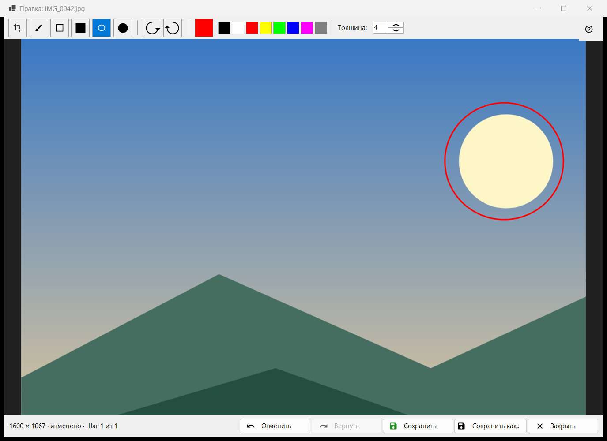
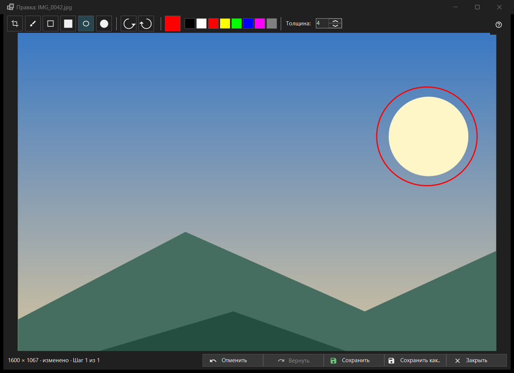

Редактирование изображения
Назначение
Небольшой редактор для одной неподвижной картинки: рисование фигур, обрезка, поворот и отражение, затем сохранение поверх оригинала или в новый файл. Открывается кнопкой «Редактировать» на панели инструментов или первым пунктом меню картинки, в заголовке - имя файла («Правка: ..»), и только для неподвижного изображения (не для анимации). Редактор заново читает файл и работает со своей копией.


Порядок действий
- Нажмите «Редактировать» в просмотрщике.
- Выберите инструмент, цвет и толщину.
- Рисуйте на картинке или обрежьте, поверните, отразите её; «Отменить» возвращает на шаг.
- Нажмите «Сохранить», чтобы записать поверх оригинала, или «Сохранить как..» для нового файла.
- Закройте окно; при несохранённых правках ответьте на вопрос.
Элементы окна
Инструменты
В полосе: «Обрезка», «Кисть», «Прямоугольник», «Залитый прямоугольник», «Овал» и «Залитый овал». Клавиши C, B, R и O (у залитых клавиши нет). Удерживайте Shift при рисовании прямоугольника или овала, чтобы получить квадрат или круг. Подсказка инструмента показывает его имя и клавишу.
Цвет и толщина
Кнопка «Выбрать цвет» открывает диалог цвета, рядом - восемь кнопок «Быстрый выбор цвета» (чёрный, белый, красный, жёлтый, лайм, синий, пурпурный, серый). «Толщина:» от 1 до 64 пикселей изображения (по умолчанию 4); клавиши [ и ] меняют её на единицу. Цвет и толщина общие для всех инструментов.
Обрезка
Инструментом «Обрезка» протяните рамку на картинке. Кнопка «Применить обрезку» появляется, только пока рамка есть. Enter делает то же самое; Esc убирает рамку без обрезки. Картинка обрезается лишь тогда, когда вы применили рамку.
Поворот и отражение
«Повернуть влево» (Ctrl+[) и «Повернуть вправо» (Ctrl+]) поворачивают пиксели. Клавиши H и V отражают картинку по горизонтали и по вертикали. Это меняет саму картинку, в отличие от клавиши R в просмотрщике, которая поворачивает только показ.
«Отменить» и «Вернуть»
«Отменить» (Ctrl+Z) и «Вернуть» (Ctrl+Y или Ctrl+Shift+Z) ходят по истории до 20 шагов в пределах лимита памяти. Строка состояния показывает размер, а после правки - «изменено» и «Шаг N из M»; когда лимит отбрасывает самые старые шаги, она пишет «Старые шаги отброшены: лимит памяти».
«Сохранить»
«Сохранить» (Ctrl+S) записывает поверх оригинала и включается только после правки; до неё подсказка кнопки: «Нечего сохранять: изображение не изменено». Для JPEG один раз за сеанс спросят: «JPEG будет пересжат - это необратимо. Дата съёмки и остальные EXIF-данные сохранятся. Продолжить?» Файл пишется под временным именем и подменяет оригинал; если сохранить не удалось, окно остаётся открытым с причиной.
«Сохранить как..»
Открывает диалог файла с именем, к которому добавлено «(ред.)». Форматы: PNG, JPEG, BMP, TIFF и WebP; картинке в любом другом формате предлагается PNG. Временная папка архива не принимается. После записи поверх оригинала просмотрщик перечитывает файл; новый файл в той же папке открывается; файл в другом месте называется в строке состояния.
Когда «Сохранить» выключено
Строка состояния пишет «Поверх оригинала нельзя» и причину: этот формат не записывается, файл только для чтения, нет прав на запись, файл занят другой программой, в файле несколько страниц или кадров (правится только первый), это файл внутри архива или файл не найден. «Сохранить как..» остаётся доступным.
Закрытие
«Закрыть» или Esc закрывает окно; Esc сначала отменяет штрих в процессе, затем убирает рамку обрезки. При несохранённых правках вопрос такой: «Правки не сохранены» - «Закрыть редактор и потерять несохранённые правки?» «Сохранить» сначала сохраняет, «Не сохранять» отбрасывает, «Отмена» (по умолчанию, она же Esc) оставляет окно. Этот вопрос задаётся и при выключенных подтверждениях.